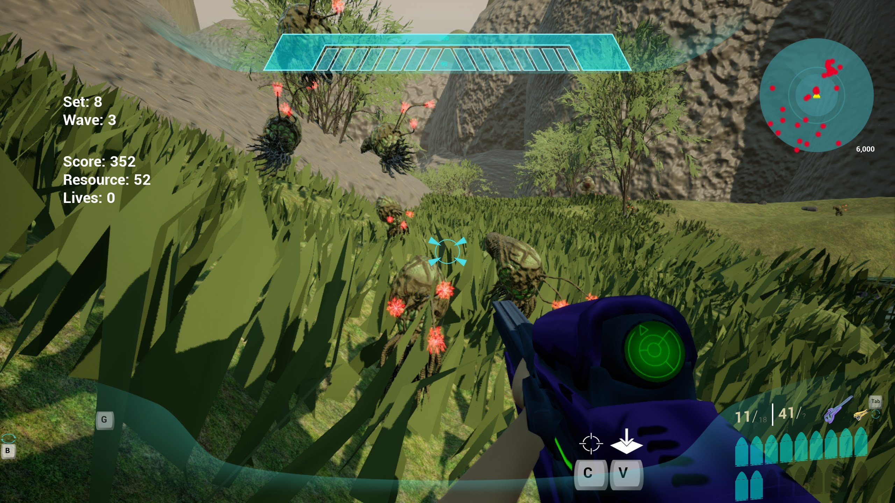
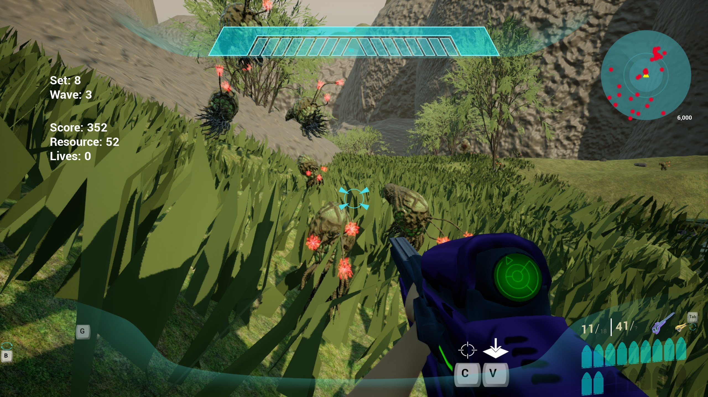

"Sacrilege" is a multiplayer FPS/RTS-hybrid sandbox game set in the "Halo" universe in which your team works together to survive an endless onslaught of enemies that increase in difficulty. All players have the ability to switch to a "Commander" mode at any time, which is a dual-function mode that allows players to buy things from a shop to aid them in battle, as well as give commands to AI.
"Sacrilege" was created from scratch using Unreal Engine 4/5, including all of the characters (which can be found in the 'Art' section), as well as a lot of different systems such as health, physics, vehicles, characters, and interactions between the various systems to allow for these to trigger each other (such as grenades triggering other grenades, vehicles causing collision damage to explosive barrels, etc). All present weapon models were created by various artists credited on the main menu under "Attributions".
Gallery

 
